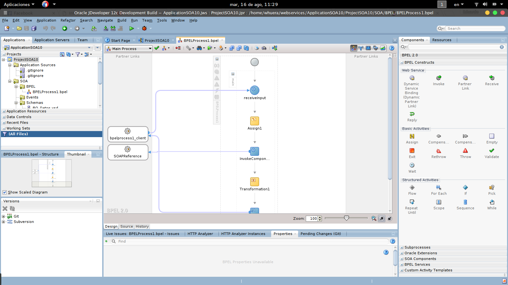

Desarrollamos e integramos software con arquitectura SOA, utilizamos herramientas de la suite Oracle e IBM, para diseñar e implementar
soluciones basadas en SOA / BPM.
El objetivo de este servicio es llevar a cabo un análisis exhaustivo de los procesos comprendidos en el alcance e identificar posibles puntos de mejora.
El modelado de procesos es una de las iniciativas más comunes dentro de una organización que considera la orientación a procesos como un elemento clave
para la optimización de su negocio.
La diagramación de los procesos y la documentación de los mismos facilitan la detección de errores en los procesos y su optimización progresiva
Las herramientas de soporte al modelado de procesos, permiten una ayuda adicional en el trabajo de modelado,
utilizando nomenclatura, iconos, gráficos adecuados a los estándares y permitiendo la publicación de los procesos a la organización.